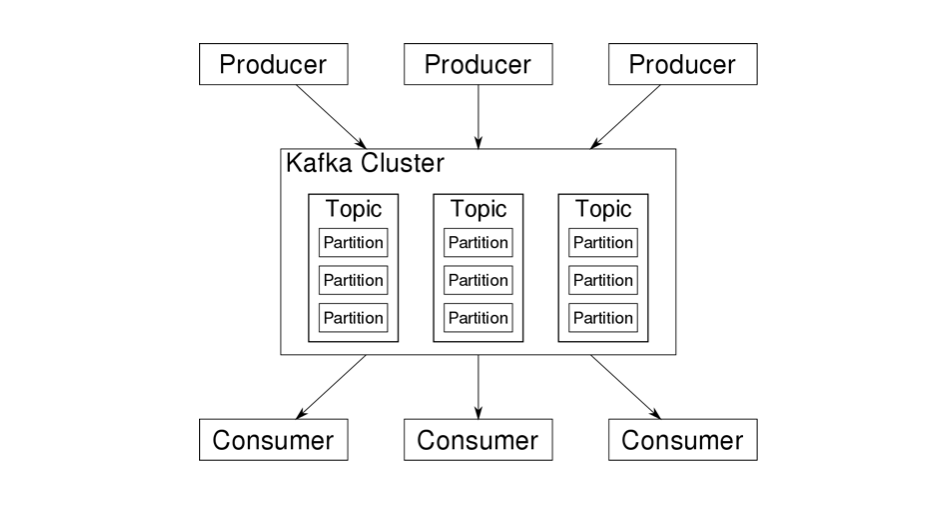
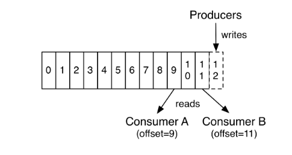

Kafka简介
Kafka是由Apache软件基金会开发的一个开源流处理平台，其持久化层本质上是一个“按照分布式事务日志架构的大规模发布/订阅消息队列”。
整体架构
Kafka 整体架构如下图所示：

broker 和 Cluster
一个独立的 Kafka 服务器称为 broker。broker 接收生产者的消息，为消息设置偏移量，并提交消息到磁盘保存；另外 broker 响应消费者拉取消息的请求，返回给消费者已经提交到磁盘上的消息。
Kafka 通常是集群部署，一个集群中有多个 broker，每个集群中有一个 broker 充当集群控制器的角色，负责管理工作，比如将分区分配给 broker 和监控 broker。
主题和分区
Kafka 中的消息是按主题（Topic）来分类的，生产者写消息的时候必须指定写入的主题，消费者消费消息的时候也需要指定消费的主题。
主题可以被分为若干个分区（Partition），Kafka 通过分区来实现数据的冗余和伸缩性，分区可以分布在不同的服务器上，以此来提供比单个服务器更强大的性能。

Kafka 不能保证整个主题内的消息是有序的，但是能够保证同一个分区内消息的有序性。在每个分区内，消息会被赋予一个唯一的偏移量。
每个分区的数据还可以有多个副本，其中有一个副本是领导者副本，其余的都是跟随者副本。生产者和消费者都是与领导者副本打交道，跟随者副本会复制领导者副本的数据，当领导者副本不能提供服务时，跟随者副本会重新选举出一个领导者副本继续对外提供服务。
生产者
生产者向集群写消息，默认情况下消息会均衡地分布到主题的所有分区上，而不用关心消息会被写到哪个分区。
不过某些情况下，生产者希望把消息写到指定分区，这通常是通过消息键和分区器来实现，分区器为消息键生成一个散列值，并将其映射到指定的分区上，这样可以保证含有同一个消息键的消息会被写入同一个分区。
生产者也可以使用自定义的分区器，根据不同的业务规则将消息映射到分区。
消费者和消费者群组
消费者可以订阅一个或多个主题，并按照消息生成的顺序读取他们，消费者通过检查消息的偏移量来区分已经读取过的消息。
偏移量是一种元数据，它是一个不断递增的整数值，在给定的分区里，每个消息的偏移量都是唯一的，消费者把每个分区最后读取到的消息偏移量保存在 Zookeeper 或者 Kafka 上，如果消费者重启，它的读取状态不会丢失。

消费者是消费者群组的一部分，也就是说一个主题可以被同一个群组的多个消费者共同读取，因此可以通过增加群组内的消费者可以提高消费能力，但是由于一个分区只能分配给一个消费者，因此如果某个主题有 n 个分区，那么最多只有 n 个消费者起作用。
主题中的某条消息只能被同一个群组中的消费者消费一遍，但是可以被多个群组的消费者消费。

保留消息
和 RabbitMQ 不同，消息被消费后并不会被删除，而是继续保留在服务器内，但是 Kafka 也不会永久保留这些消息，Kafka 判断一个消息是否应该被删除主要看两点：
- 消息是否过期：消息会在 Kafka 中保留一段时间（比如 7 天），超过这个时间后消息会被删除
- 保留消息的容量是否过大：Kafka 会限制保留消息的容量（比如 1G），如果消息太多超过设置的容量，则就算消息没有过期，也会删除最早的消息
在 Spring Boot 中使用
添加 Maven 依赖
<dependency>
<groupId>org.springframework.kafka</groupId>
<artifactId>spring-kafka</artifactId>
</dependency>
添加配置
这里只是在 application.yml 添加最小配置。
spring:
kafka:
bootstrap-servers: localhost:9092
consumer:
group-id: mygroup
定义消息对象
这一步不是必须，你也可以直接发送一个字符串。
@Data
public class Message {
private Long id;
private String msg;
private Date sendTime;
}
生产者
@Component
@Slf4j
public class KafkaSender {
@Autowired
private KafkaTemplate<String, String> kafkaTemplate;
//发送消息方法
public void send() {
Message message = new Message();
message.setId(System.currentTimeMillis());
message.setMsg(UUID.randomUUID().toString());
message.setSendTime(new Date());
log.info("+++++++++++++++++++++ message = {}", JSON.toJSONString(message));
kafkaTemplate.send("test", JSON.toJSONString(message));
}
}
消费者
@Component
@Slf4j
public class KafkaReceiver {
@KafkaListener(topics = {"test"})
public void listen(ConsumerRecord<?, ?> record) {
Optional<?> kafkaMessage = Optional.ofNullable(record.value());
if (kafkaMessage.isPresent()) {
Object message = kafkaMessage.get();
log.info("----------------- record =" + record);
log.info("------------------ message =" + message);
}
}
}
参考文档
- 《Kafka权威指南》
本作品采用知识共享署名 4.0 国际许可协议进行许可，转载请注明原文链接
本文链接：https://schhx.github.io/2019/04/02/Kafka简介/